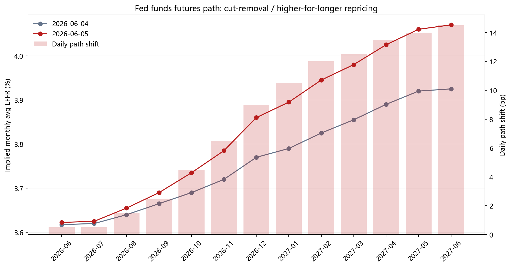
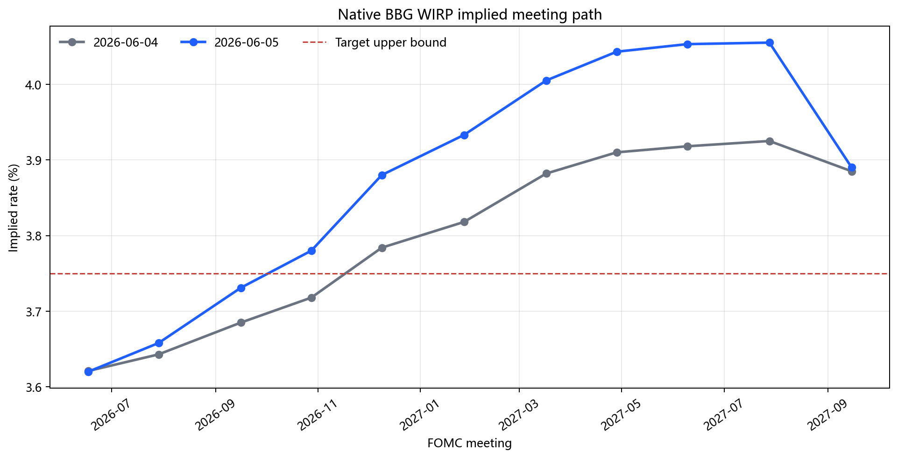
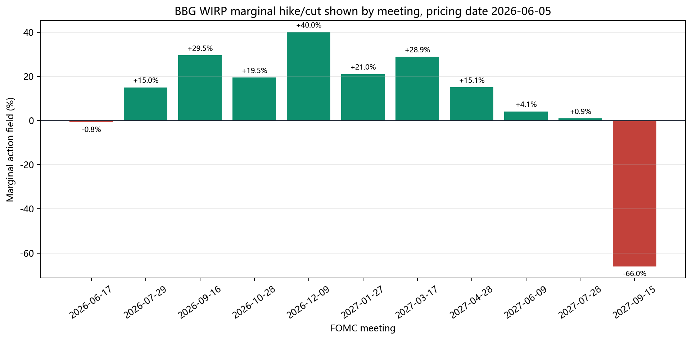
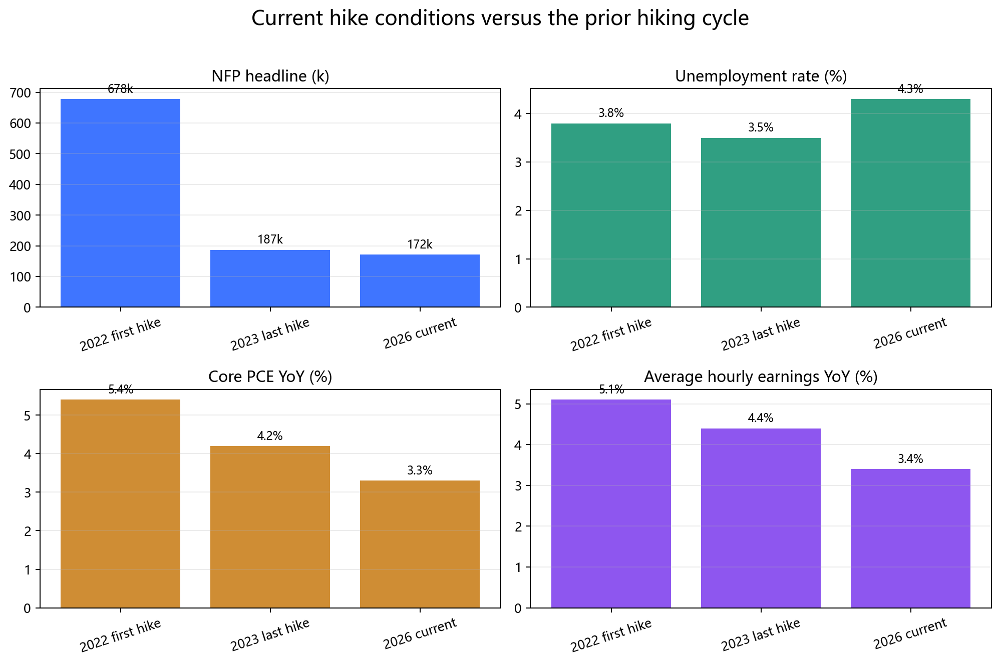
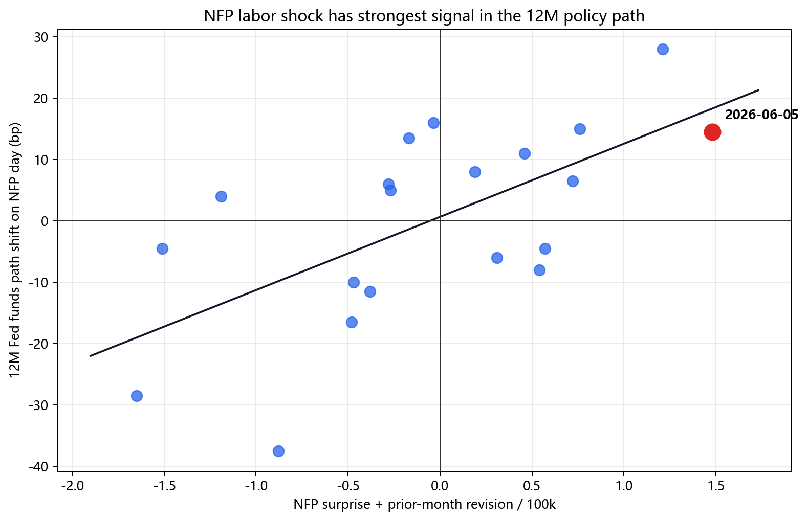

日期：2026-06-06 定位：主报告附录，native WIRP calibration added 2026-06-07
结论
6月5日NFP不是近月加息恐慌，而是远端政策路径上修。1M path只上修0.5bp，12M futures path上修14.5bp；原生BBG WIRP的2027年6月会议隐含利率上修13.5bp，pricing date 2026-06-05时已累积1.72个25bp净加息。
市场路径
| Contract | Month | 2026-06-04 implied | 2026-06-05 implied | NFP-day shift | Slope vs Jun-26 front |
|---|---|---|---|---|---|
| FFM6 Comdty | 2026-06 | ||||
| FFU6 Comdty | 2026-09 | ||||
| FFZ6 Comdty | 2026-12 | ||||
| FFH7 Comdty | 2027-03 | ||||
| FFM7 Comdty | 2027-06 |

原生WIRP校准
Bloomberg WIRP原生导出确认了Fed Funds futures事件研究的方向：近端会议没有明显加息压力，但6-12M路径明显上修。
| Meeting | 06/05 #Hikes/Cuts | 06/05 marginal action | 06/05 implied rate | 1D rate shift | 1D #H/C shift |
|---|---|---|---|---|---|
| 2026-06-17 | -0.01 | -0.03 | |||
| 2026-07-29 | 0.14 | +0.04 | |||
| 2026-09-16 | 0.44 | +0.16 | |||
| 2026-10-28 | 0.63 | +0.23 | |||
| 2026-12-09 | 1.03 | +0.36 | |||
| 2027-01-27 | 1.24 | +0.44 | |||
| 2027-03-17 | 1.53 | +0.47 | |||
| 2027-04-28 | 1.68 | +0.51 | |||
| 2027-06-09 | 1.72 | +0.52 |


解读：
- 2026-06-17会议边际行动字段为-0.8%，不支持“下一次会议立刻加息”。
- 2026-12-09会议累积到1.03个25bp净加息；2027-06-09会议累积到1.72个25bp净加息。
- 2027年6月WIRP implied rate从6月4日的3.918%升至6月5日的4.053%，单日上修13.5bp，和FFM7 futures +14.5bp的右尾重定价一致。
与上一轮加息周期比较
6月5日的NFP事件不能只看单月就业增量。和2022相比，当前最像2022的部分不是就业，而是油价和地缘冲突把headline inflation、通胀预期和Fed信誉风险重新推到前台；最不像2022的部分是政策利率起点、工资压力和消费者缓冲垫。
| Metric | 2022-03 first-hike context | 2023-07 last-hike context | 2026-06 current event | Read-through |
|---|---|---|---|---|
| NFP headline | +678k | +187k | +172k | 当前就业增量接近2023最后一次加息附近，远低于2022启动周期的过热修复。 |
| Unemployment rate | 当前劳动力市场明显松于上一轮两个加息节点，不支持大幅连续加息作为基准。 | |||
| Average hourly earnings YoY | 工资通胀仍高于2%通胀兼容区间，但工资-价格螺旋压力弱于2022/2023。 | |||
| Headline PCE YoY | 当前headline PCE高于2023最后一次加息附近，说明能源冲击已经影响总通胀。 | |||
| Core PCE YoY | 核心通胀低于上一轮加息节点，但仍比目标高约1.3pp。 | |||
| Oil / geopolitical shock | Russia/Ukraine后Brent一度升至120美元/桶以上 | 能源价格正常化，不是政策主线 | EIA 5月STEO：4月Brent均价约117美元/桶，4月7日触及138美元/桶，5-6月基准预测约106美元/桶 | 这是最像2022的部分：供给冲击把headline和预期风险重新外生化。 |
| Energy CPI / gasoline | gasoline和能源是2022 headline CPI的重要推手 | 能源项转为拖累/低基数 | BLS 4月CPI：energy同比+17.9%，gasoline同比+28.4%、环比+5.4% | 油价已通过汽油和能源项进入消费者可见通胀，Fed更难“看穿”headline。 |
| Effective fed funds / policy rate | 0.08-0.20% | 3.62-3.63% | 当前不是zero-rate behind-the-curve环境；加息是再校准，不是追赶式启动。 |

结论：当前就业绝对增量接近2023年最后一次加息附近，但失业率明显更高、工资更低；同时油价和能源CPI使通胀风险更像2022的供给冲击。它支持WIRP把1-2次净加息纳入路径中枢，不支持把连续大幅加息作为基准。
历史分位
| sample | metric | n | Event | Percentile |
|---|---|---|---|---|
| all_available_path | d_rate_bp_1m | 13 | ||
| all_available_path | d_rate_bp_3m | 15 | ||
| all_available_path | d_rate_bp_6m | 18 | ||
| all_available_path | d_rate_bp_12m | 24 | ||
| all_available_path | path_twist_12m_minus_1m_bp | 13 | ||
| full_horizon_path | d_rate_bp_1m | 13 | ||
| full_horizon_path | d_rate_bp_3m | 13 | ||
| full_horizon_path | d_rate_bp_6m | 13 | ||
| full_horizon_path | d_rate_bp_12m | 13 | ||
| full_horizon_path | path_twist_12m_minus_1m_bp | 13 | ||
| full_horizon_with_nfp_surprise | d_rate_bp_1m | 9 | ||
| full_horizon_with_nfp_surprise | d_rate_bp_3m | 9 | ||
| full_horizon_with_nfp_surprise | d_rate_bp_6m | 9 | ||
| full_horizon_with_nfp_surprise | d_rate_bp_12m | 9 | ||
| full_horizon_with_nfp_surprise | path_twist_12m_minus_1m_bp | 9 |

回归摘要
| Sample | Predictor | n | Slope | R2 | Corr |
|---|---|---|---|---|---|
| 12m_available_with_nfp | nfp_surprise_100k | 20 | +11.5bp / 100k | 0.25 | 0.50 |
| 12m_available_with_nfp | revision_1m_100k | 20 | +18.1bp / 100k | 0.22 | 0.47 |
| 12m_available_with_nfp | surprise_plus_revision_100k | 20 | +11.9bp / 100k | 0.40 | 0.63 |
| full_horizon_with_nfp | nfp_surprise_100k | 9 | +8.7bp / 100k | 0.24 | 0.49 |
| full_horizon_with_nfp | revision_1m_100k | 9 | +17.9bp / 100k | 0.47 | 0.68 |
| full_horizon_with_nfp | surprise_plus_revision_100k | 9 | +9.8bp / 100k | 0.53 | 0.73 |
方法与限制
- 用Fed Funds futures固定期限路径，而不是反推WIRP概率。
- NFP surprise使用Bloomberg BQL
ACTUAL_RELEASE - BN_SURVEY_MEDIAN。 - Revision使用
FIRST_REVISION作为前月一修正代理，未包含SECOND_REVISION。 - 已加入
reports/WIRP.xlsx原生BBG WIRP摘要导出；精确target-range分布仍需Bloomberg完整概率矩阵。